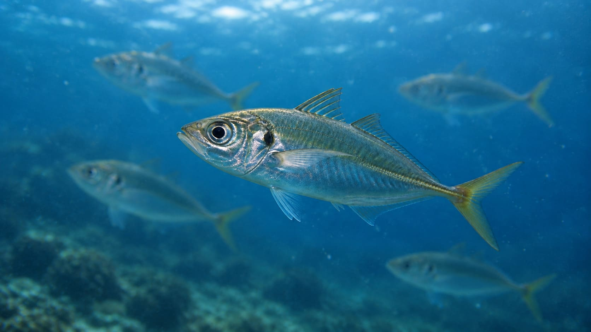
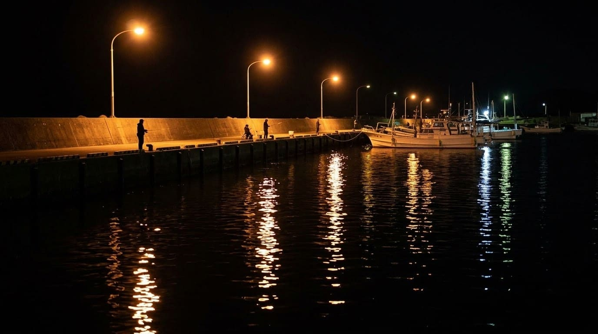

【完全版】堤防から船まで！アジ（マアジ）の生態と実践的釣り方ガイド

刺身にタタキ、アジフライなど、私たちの食卓に欠かせない国民的魚「アジ」。堤防からファミリーで手軽に狙える一方で、ルアーで繊細にアプローチしたり、船から大型を狙ったりと、釣り人を一生飽きさせない奥深いゲーム性を秘めたターゲットです。
本記事では、ただ釣るだけでなく「狙って釣る」ために知っておきたいアジの生態から、スタイル別の攻略法までを徹底解説します。
1. アジ（マアジ）の基本生態と、釣り人だけが知る「2つの顔」
一般的にアジ釣りでターゲットとなるのはスズキ目アジ科の「マアジ」です。
アジ科の魚には、尾ビレ側の側線に「ゼイゴ」と呼ばれるノコギリ状の硬いウロコがあり、サバやイワシなどの回遊魚と見分ける明確な目印になります。
また、マアジには生態によって大きく2つのタイプが存在します。
- 黒アジ（回遊型）：外洋を大群で広く回遊し、体色が黒っぽくスマートな体型。
- 金アジ / 黄アジ（居着き型）：湾内の岩礁帯などの浅場に定住し、体色が黄色みを帯びた個体。回遊しないためエサをたっぷり食べて脂の乗りが別格ですが、市場にはほとんど出回らないため、釣り上げた人だけが味わえる至高のターゲットです。
2. なぜアジは常夜灯に集まる？「食性」から読み解くアプローチ

夜の堤防でアジを狙う際、常夜灯の周りは一級ポイントになります。しかし、アジは単に「明るいから」集まっているわけではありません。光に集まる習性を持つ動物プランクトンが寄り、それを捕食するためにアミやシラスなどの小魚（ベイト）が集まり、さらにそれを狙ってアジが集結するという「食物連鎖のピラミッド」が光の下で出来上がっているのです。
3. 釣果を分ける絶対条件：「タナ（泳層）」の把握
同じ堤防に複数の回遊魚の群れが入っている場合、海の中では明確な棲み分けが起きています。
- 上層：イワシ
- 中層：サバ
- 下層（底付近）：アジ
アジを狙うなら、まずは仕掛けをしっかり底まで沈めることが基本中の基本です。ただし、夜間の常夜灯周りなどでは表層付近まで浮いて捕食することもあるため、「アジ＝底」という固定観念に縛られず、反応のある深さ（レンジ）を探り当てることが爆釣への近道です。
4. スタイル別！アジ攻略のアプローチ
アジは群れで行動するため、釣り場やサイズに合わせた最適なアプローチを選ぶことが重要です。
① ファミリーフィッシングの王道「サビキ釣り」
コマセ（撒き餌）カゴにアミエビを詰め、海中で煙幕を作って擬似餌の針に食わせる、堤防での数釣りに最強の釣法です。
- 実践テクニック：1匹掛かってもすぐに巻き上げず、数秒待つことで他の針にも次々とアジが掛かる「追い食い」を狙えます。
- エサ選びのコツ：集魚力を重視するなら「冷凍アミエビブロック」一択ですが、独特の匂いや解凍の手間が気になる方には、手が汚れず常温保存できる「チューブタイプ（フルーツの香り付きなど）」がファミリー向けに重宝します。
② 見切る大アジに口を使わせる「ウキ釣り」
20cmを超える良型のアジになると警戒心が格段に上がり、サビキの太い糸や複数の針を嫌って食わなくなることがあります。
- 実践テクニック：そんな時は、繊細な1本針の「ウキ釣り」の出番です。アミエビを海にパラパラと撒き、その流れに仕掛けを自然に同調（リンク）させることで、警戒心の強い大アジに思わず口を使わせることができます。小気味よいダイレクトな引きを楽しめるのも魅力です。
③ ゲーム性抜群のルアーゲーム「アジング」
1g前後の極小ジグヘッドとワームを使い、繊細なアタリを掛けていく近年大人気のルアーフィッシングです。
- 実践テクニック：ルアーが着水したら「1、2、3…」とカウントダウンし、表層から底までどの深さにアジがいるか（レンジ）を探り当てることが最も重要です。
- ルアーカラーより「食事」に合わせる：釣れないとルアーの色を頻繁に変えたくなりますが、それよりも「今アジがプランクトンを漂って食べているのか（スローフォール）、小魚を追い回しているのか（速い動き）」という食事内容に合わせてアクションを変えるほうが圧倒的に効果的です。
④ 沖の深場を攻める「船のビシ釣り」
水深30〜100mの深場に潜む30cmオーバーの大アジを狙うなら、遊漁船からの「ビシ釣り」が王道です。
- 実践テクニック：オモリ一体型のコマセカゴ（ビシ）を使い、船長から指示されたタナでしっかりコマセを振ってアジを寄せます。
- 口切れに注意：アジは引きが強い反面、口の周りが非常に薄い膜でできているため、強引に巻き上げると簡単に「口切れ」してバレてしまいます。リールのドラグを少し緩めに設定し、水面まで来たら必ずタモ網ですくうのが大物確保の鉄則です。
📍 関東の生息・釣果スポット
※マップ上の赤いドットが釣れるポイントです。